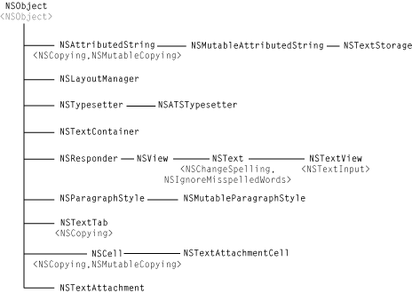

Class Hierarchy of the Cocoa Text System
In addition to the four principal classes in the text system—NSTextStorage, NSLayoutManager, NSTextContainer, NSTextView—there are a number of auxiliary classes and protocols. The diagrams below give you a more complete picture of the text system. Names between angle brackets, such as <NSCopying>, are protocols.

Here are some other text-system–related classes:
NSFileWrapper
NSInputManager
NSInputServer
NSFont
NSFontPanel
NSFontManager
NSFontDescriptor
NSGlyphGenerator
NSGlyphInfo
NSGlyphStorage protocol
NSRulerView
NSRulerMarker
NSTextField
NSSecureTextField
NSSpellChecker
NSTextBlock
NSTextTable
NSTextTableBlock
NSTextList
© 1997, 2009 Apple Inc. All Rights Reserved. (Last updated: 2009-04-08)